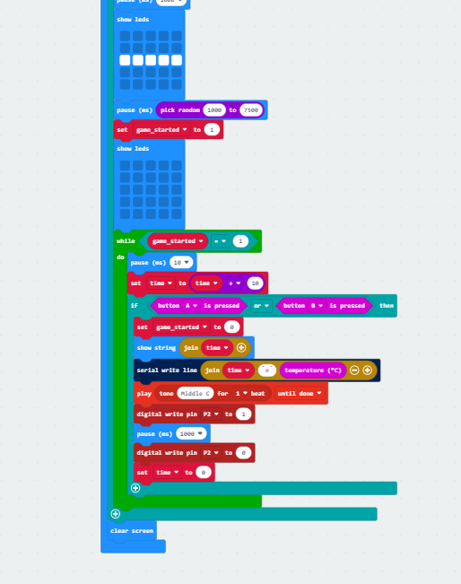
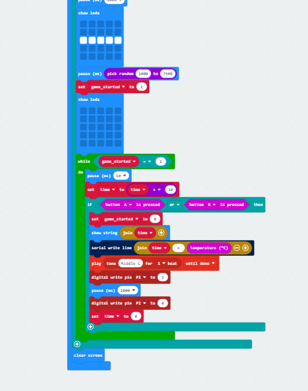

Jump to: Investigation
Jump to: Plan and Design
Jump to: Create
Jump to: Evaluation
Jump to: References
Jump to: Summary Word Count
Meeting The Brief
Investigation
The first system I investigated was Fitbit. One feature of Fitbit is tracking step count by using an accelerometer and transferring the analogue movement data to digital data. I liked the way the Fitbit transfers this data from analogue to digital and investigated using a step-counting system in my project, but I rejected it as I found the plausibility of having to carry around the microbit limited. (McLaughlin, 2021)
The second system I investigated was the walk in my shoes website. The website uses mindfulness exercise and wellness activities to help people relax. I liked the proven effectiveness of mindfulness exercises in use here, but rejected this system due to the difficulty of making auditory recordings for my project (Wellbeing activities for Young People)
The final system I investigated is Reaction Time & Reflex Test app. The apps main feature is a game that tracks your reaction time and logs your progression. I chose this system as I believe I can help improve productivity and concentration by using reaction time. (Thinkabout, 2020)
My system works by user pressing a button on the website to start the game. The lights on the microbit will then light up before turning off at the same time, after a random time. The user will press the button again quickly after the lights turn off to log reaction time and the area temperature. This data will be compared to externally sourced data to predict/inform decisions on Sport and Productivity. My target audience is people looking to pick up sports, along with people who long manual labour jobs, and those who spend a lot of time working on computers
My research enabled me to identify the key factors to implement and abstract by looking the features of each system I investigated and comparing to the project brief. I will abstract the CSS styling, creating an account function, other games on my final system along with the “Contact us" and "Privacy Policy” pages.
My objectives are to model a system which:
- Is fully automated, uses the analogue temperature input, the reaction time input, the analogue audio output and the digital LED output
- Validates and stores the data gathered from the microbit in firebase
- Analyses the data gathered to inform decisions on what sport the user should take up. Data will also be analysed to inform the decision on whether a manual worker needs a break to increase productivity.
- Uses Python and/or JavaScript to create a graph of reaction times which effects the what if questions.
- Offers wellbeing insights based on these two “what if” questions:
- What if the user was to take up a sport? Parameters: Age,Gender,Reaction time
- What if the user was to take a break from their manual labour? Parameters: Reaction time, Time Working , Temperature
- Graphs the history of the user's reaction time
Based on how my project works, it will meet the Basic and Advanced requirements in the brief

Plan and design
Users start the system by clicking a button on the website. The microbit's lights turn on one by one. They then go off together after a random time. Users then quickly press the button again after the lights go off to record their reaction time and the current temperature of the area. After analyzing this data, along with externally sourced data, the two “what if” questions will be answered, and the information will be displayed to user on the website
This system meets the requirements of the brief as it Is automated has an analogue temperature input, digital reaction time input, analogue audio output and digital LED output. The system also validates and stores this input data in firebase
The system will analyse the input data to make decisions on what sport the user should take up. This will also inform a decision on if a manual worker should take a break to increase their productivity.
Agile was used when making this project.While the over all target was to create the reaction time system and fulfull the basic and advanced requirments, this was broken down into smaller tasks as detailed in the create log with each stage being tested as it was developed.
The system uses a decision-making model to determine the answers to what what-if questions.
The system will use Python and JavaScript to make a graph of the user's reaction times which will be a data input for the “what if” questions.
These “what if” questions will be: “What if the user was to take up a sport?” with the parameters of Age, Gender and Reaction time. The second what if question will be: “What if the user was to take a break from their manual labour?” with the parameters of Reaction time, Age and Temperature
index.html , whatif.html Flowcharts and Circut Diagrammockgraph.html Flowchart
For the technologies I will use, I will use the microbit. The microbit is a hardware ARM-based embedded system. It will be used in showing the 5 lights for the reaction time game ,audio output and temperature input.
Other technologies I will use include:
Python is a high-level, general-purpose programming language. It will be used in coding up data transfer to and from firebase.
JavaScript is a programming language and the core technology of the World Wide Web. I will use it in coding related to the website and data transfer
HTML is the standard markup language for documents designed to be displayed in a web browser. It will be used to code by the website
Visual studio code is an IDE. It will be used for coding HTML , CSS and JavaScript.
Thonny is an IDE. It will be used for coding python.
Google Firebase is a backend cloud computing service and application development platform. It will be used to store the input data and other data required for the project.
My project follows the principles of universal design by using alt text for images, having a simple and easy to understand design , having a tolerance for error and low physical effort through having big buttons, and having in-page links for Size and Space for Approach and Use
Create
Week 1:
- Wrote code in makecode to make the reaction time game on the microbit
- Overcame the problem of deciding on the idea I have decided to pursue.
 

Week 2:
- Wrote python code to send reaction time and temperature to firebase from the microbit
- Fixed problems with sending 2 data values to firebase at the same time. Overcame to problem by sending them into thonny under the same string them splitting the string.
- Tested the microbit reaction time game and ensured to worked
Week 3:
- Wrote the HTML and CSS code for the navigation bar of the website
- Overcame the problem of when the mouse was over a navigation option, the navigation box was not darkening. Overcame this by using li:hover.
- Tested the navigation buttons to make sure they worked


Week 4:
- Wrote the remainder of the homepage for the website
- Overcame the problem of text running off the screen. Overcame this by adding margins and using flexbox to align the text
- Tested the viewing the text under different browser dimensions to ensure it stayed on the screen.
Week 5:
- Wrote code to Initialize the firebase database with the JavaScript of my website
- Overcame the problem of the getDatabase() function not working by realizing I need to import the function from firebase itself, along with other functions.
- Tested adding, updating, removing and retrieving data from firebase using JavaScript to enhance my knowledge of using firebase with JavaScript, as i previously only knew how to do this using python and needed to learn this for week 6.
Week 6:
- Wrote code to retrieve the data of the last recorded reaction time from firebase and display it on the website.
- I overcame the problem of not being able to find the latest reaction time value, only being able to find specifically inputted values. I did this by using the for Each function to find the keys of all the firebase data values and adding them to an array, before finding the largest of these values
- Tested pressing the button on the website to ensure it gave the latest reaction time value

Week 7:
- Created the “What if” webpage in HTML for the what if questions
- Overcame to problem of an image intruding into text and being too large by changing the image for a more suitable one
- Tested the Navigation bar on the what if page to ensure it worked correctly
Week 8:
- Wrote code to take in Reaction time values from database and assign them to variables
- Overcame the problem that directories in my database had been named with hyphens in them. This meant I could not use the method i knew to find the data in the database and assign it into variables. I learned a new method of doing this to overcome the problem
- I tested the variables to ensure they had the correct values assigned to them from the database. This was done by using console.log to check

Week 9:
- Wrote code to take in the users Reaction time, Age, Gender, Time elapsed working and temperature of the area and assign all these to variables
- Overcame the problem that the reaction time was in milliseconds, and i will need it in seconds for calculations for finding how the users reaction time compares to the average for their age and gender. I did this by creating a string of “0.” and i added the strings of the 0. and the user's reaction time before converting it into a number for calculations
- Tested the variables to ensure the Reaction time, Age, Gender, Time elapsed working and temperature of the area were correctly assigned to variables. I used console.log to ensure values were correct
Week 10:
- Wrote code to calculate what sport the user should take up based on the parameters. Wrote code to calculate whether the user should take a break from their manual labor based on the parameters for this whatif question of the area around them. Also wrote code to display this on the website
- Overcame the problem of the reaction time being incorrectly used in calculations. No matter what the time in miliseconds was “0.” was being added to the reaction time to convert to seconds. Fixed this so it was properly converted
- Tested the whole process of inputting user data and pressing the button on the website to display the answers to the “what if” questions


Week 11:
- Wrote code to make an LED turn on and make a sound be outputted when the user presses the button on the microbit to input their reaction time.
- Overcame the problem of the LED being on, and then turning off when the button on the microbit was pressed. This was overcame by switching the values of the 2 digital write pin blocks.
- Tested the process of pressing the button on the microbit to ensure it turns on the LED and plays a sound when pressed
Week 12:
- Wrote code to make a graph using charts to display the users 10 most recent reaction times.
- Overcame the problem of the reaction time values not displaying on the graph. The code to run the graph was running before the code to retrieve the reaction time values from the database. I put the code for the chart inside the function to get the data from the database
- Tested adding new reaction time and making sure the chart updates accordingly


Evaluation
I believe the final artefact met all the requirements of the brief successfully.
My projects Basic Requirements went quite well while making my project. I managed to create both digital and analogue inputs and outputs related to wellbeing for my project and send the inputted data to firebase to be stored. I used this inputted data in multiple analysis components. The only real setback during the completion of the basic requirements was that it took time to find a suitable digital output. The artefact meets the basic requirements well.
The Advanced requirements also went well. The artefact meets all 3 advanced requirements well. I managed to source an external dataset of reaction times and along with the user's inputted data, a computer model was successfully created to find answers to the what if questions based on three parameters. A graph was only created of the history of the user's reaction times.
While the artefact met all 3 advanced requirements successfully, I believe the code I wrote to do so was quite long, and with more learning could have been more condensed, making it easier to read through and making a simpler flowchart. Having to find multiple variations of reaction time for many age groups caused this. I believe if I were to do the project again, I could do all this in a function using a for/while loop instead of using many if statements.
My project has met the needs of the end user. My survey showed that the end user wishes to increase their fitness and concentration. The user also believes that taking up a new sport and increasing their productivity would positively impact their wellbeing
My project will suggest a set of new sports for the user to take up depending on age, gender and reaction time. This will help the user increase their fitness. My project will suggest whether the user should take a break from their labour. If taking a break will improve productivity, the system will suggest that, improving the user's productivity. Improving productivity will improve the user's concentration.
I believe that my project could be improved by adding a new system of recording reaction time, along with keeping my original system. Using multiple ways of recording the user's reaction time would increase accuracy in recording the user's reaction time, as they could be good or bad at specific “games”/ways of recording reaction time.
References
McLaughlin, M. (2021) Are fitbits worth it? or should you buy a smartwatch?, Lifewire. Available at: https://www.lifewire.com/what-is-fitbit-4176010 (Accessed: 15 December 2023).
Wellbeing activities for Young People (no date) Walk in My Shoes. Available at: https://www.walkinmyshoes.ie/young-people/resources (Accessed: 15 December 2023).
Thinkabout (2020) Reaction Time & Reflex Test, App Store. Available at: https://apps.apple.com/us/app/reaction-time-reflex-test/id1516097125 (Accessed: 15 December 2023).
Pusapati, V. et al. (2023) Effect of age and gender on Reaction Time, Effect of Age and Gender on Reaction Time. Available at: https://skeenapublishers.com/journal/ijeti/IJETI-04-00051.pdf (Accessed: 18 December 2023).
Lewis, V. (2023) How taking breaks can actually improve productivity, LinkedIn. Available at: https://www.linkedin.com/pulse/how-taking-breaks-can-actually-improve-productivity-victoria-lewis#:~:text=The%20review%20included%2022%20studies,accuracy%2C%20productivity%2C%20and%20creativity (Accessed: 18 December 2023).
Roach, A. et al. (2014) The effects of exercise on Reaction Time, Microsoft Word - 601-group-1.doc. Available at: https://minds.wisconsin.edu/bitstream/handle/1793/80032/The%20Effect%20of%20Exercise%20on%20Reaction%20Time.pdf?sequence=1 (Accessed: 18 December 2023).
Milroy, T.H. (1909) Fatigue studied in reaction time experiments - milroy - 1909 - ..., FATIGUE STUDIED IN REACTION TIME EXPERIMENTS. Available at: https://physoc.onlinelibrary.wiley.com/doi/pdf/10.1113/expphysiol.1909.sp000040 (Accessed: 18 December 2023).
Top 5 sports requiring lesser reaction time with more precision (2012) Sportskeeda. Available at: https://www.sportskeeda.com/table-tennis/top-5-sports-requiring-lesser-reaction-time-with-more-precision (Accessed: 18 December 2023).
Wood, R. (2010) Top ranked reaction time sports, Top Reaction Time Sports. Available at: https://www.topendsports.com/fitness/sports/reaction-time-tes.htm (Accessed: 18 December 2023).
Summary Word Count
Meeting the brief: 0 words
Investigation: 449 words
Plan and Design: 438 words
Create: 899 words
Evaluation: 400 words
Total Word Count: 2186 words